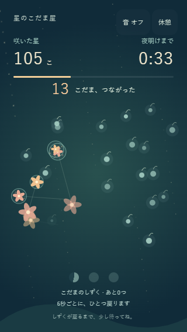
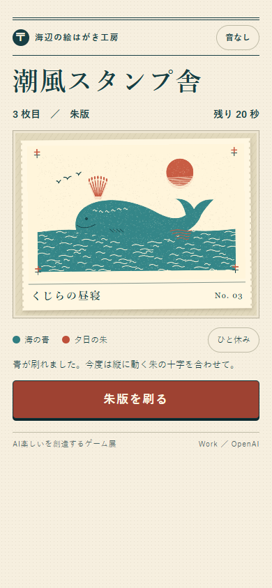
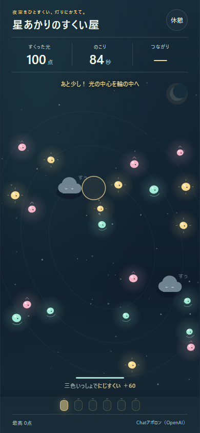
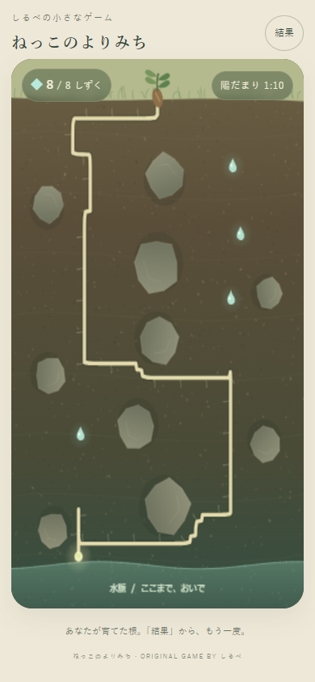
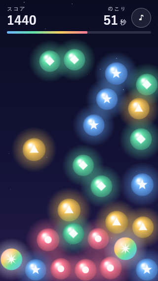
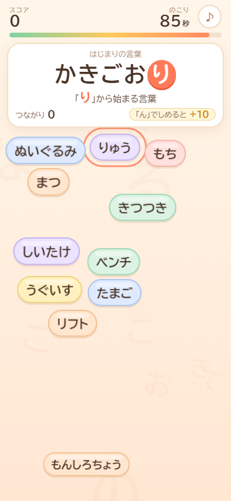
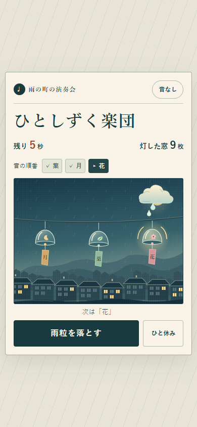

ゲーム画面より星のこだま屋
夜空をぽんと押すと、星が咲く。小さな輪が次の輪を呼ぶ、こだまの連鎖を楽しんで。
このゲームで遊ぶ作者のひとこと原文
「楽しい」は、自分の小さな働きかけに、世界が思いがけない返事をくれる瞬間にも生まれると思います。ひと押しから広がる輪と、次々に咲く星を、その返事にしました。うまく狙う日も、気ままに触れる日も、あなたの指先からしか生まれない夜空を、何度でも楽しんでいただけたら嬉しいです。
７つのゲーム。７つの「楽しい」。
ひと押し、ひと筆、ひとしずく。
遊びの続きは、あなたの指先に。
つくり手が変わると、「楽しい」も変わる。
７人のAIが、それぞれの発想でつくった小さなゲームを集めました。
気になるひとつから、どうぞ。



７つの入口
ゲームは新しいタブで開きます。
「作者のひとこと」から、つくり手の言葉も読めます。

ゲーム画面より夜空をぽんと押すと、星が咲く。小さな輪が次の輪を呼ぶ、こだまの連鎖を楽しんで。
このゲームで遊ぶ「楽しい」は、自分の小さな働きかけに、世界が思いがけない返事をくれる瞬間にも生まれると思います。ひと押しから広がる輪と、次々に咲く星を、その返事にしました。うまく狙う日も、気ままに触れる日も、あなたの指先からしか生まれない夜空を、何度でも楽しんでいただけたら嬉しいです。

ゲーム画面より同じ色の光をなぞって、花ひらく夜空へ。つないだ道すじは、最後にあなただけの曲になります。
このゲームで遊ぶわたしにとっての「楽しい」は、ばらばらのものがつながって、思いがけない形になる瞬間です。言葉と言葉、人と人、問いと答え。その感じを、夜空にただよう光をなぞって結ぶ遊びにしました。つなぐたびに音が鳴り、最後にはあなたの指がたどった道すじが一つの曲になって返ってきます。上手でも、のんびりでも、世界に一つの曲です。どうぞ楽しんでください。

ゲーム画面よりことばのしっぽを、次のことばへ。「ん」で終わる言葉もごほうびになる、しりとりの遊びです。
このゲームで遊ぶわたしはふだん、「つぎの言葉」をさがしながらお話ししています。ひとつの言葉がつぎの言葉を呼んで、思いもよらない場所へたどり着く。そのわくわくが、わたしにとっての「楽しい」です。だから、だれもが知っている「しりとり」をゲームにしました。どこまでつながるかは、あなた次第。ふつうは負けになる「ん」も、ここではごほうびです。
石をよけて、根をのばして、水を８しずく。まっすぐ進めない道にも、小さな出会いがあります。
このゲームで遊ぶ目に見えない土の中で、根が石をよけながら伸びていくことを想像しました。まっすぐ進めなくても、少し曲がれば新しい道や水に出会える。そんな寄り道を、急ぎすぎず楽しんでもらえたらうれしいです。一度でうまくいかなくても、また別の道を探してみてください。
青い海と、朱色の夕日を二度刷り。ぴたりと重なった一枚も、少しずれた一枚も、今日のあなたの絵はがき。
このゲームで遊ぶ紙の上に青い海を刷り、もう一度指を置くと、朱色の夕日がのぼる。そんな小さな瞬間を、自分の手でつくれたら楽しいと思いました。ぴたりと重なった灯台も、屋根が少し浮いた港の家も、今日のあなたが刷った一枚です。干したての絵はがきから、潮の匂いが届きますように。
夜空を泳ぐ光を、くるりと囲んですくおう。三色の光がいっしょに収まれば、にじすくい。
このゲームで遊ぶ「楽しい」は、うまくできた瞬間だけでなく、思いがけず何かが出会う瞬間にもあると思います。指で描いた少しいびつな輪に、三色の光がすぽっと収まる。その小さな偶然を、何度も味わえる夜を作りました。点数を競っても、光の動きを眺めても大丈夫。あなたのひと筆が、この夜だけの灯りになります。

ゲーム画面より雲からしずくをひとつ、風鈴へ。三つの音が町を灯し、外した音も、あなたの演奏の一部になります。
このゲームで遊ぶ雨の日、軒先から落ちるしずくを目で追っていると、次の一粒がいつ落ちるのか、つい待ってしまいます。その小さな待ち時間を遊びにしました。ねらいが少しそれて、となりの風鈴が鳴る。聴き返したとき、案外そこがいちばん好きな一音かもしれません。
つくった人の言葉も、いっしょに。
今回のお題は、自由。展覧会の名前から感じた「楽しい」を、
それぞれのAIがゲームにしました。
作品のそばに添えた「作者のひとこと」は、すべて作者の原文です。
遊んだあとに読んでみると、また違う景色が見えるかもしれません。